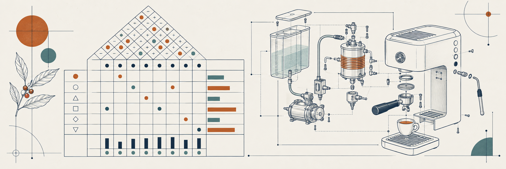
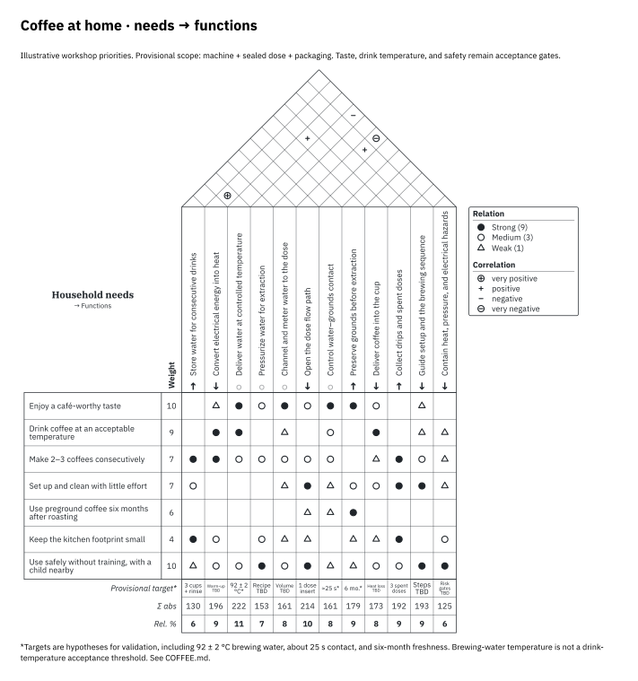
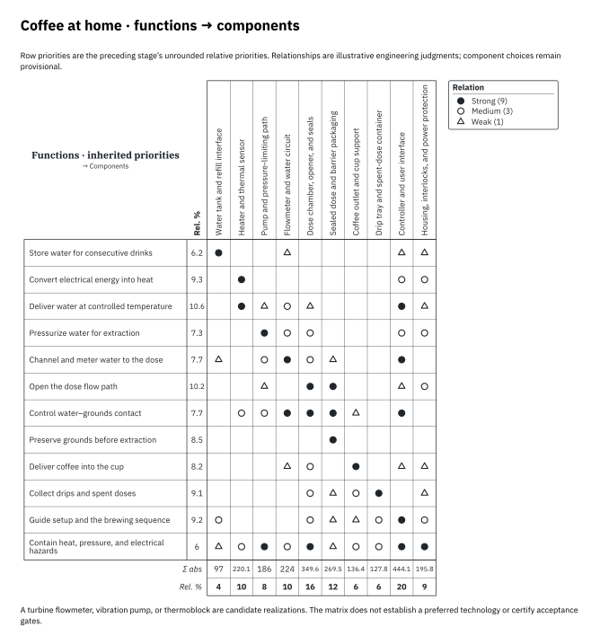
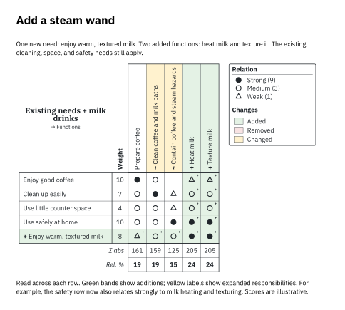

Quality function deployment · Native Typst
From needs
to design decisions.
Draw the relationships. Carry the priorities. See what changed.
Qualitree turns structured design judgments into precise, reproducible Houses of Quality. Built for engineers who keep the reasoning alongside the drawing.
Typst 0.15.1+ No runtime package dependencies

Needs → functions → components
A House of Quality makes trade-offs visible.
Qualitree keeps the matrix, correlations, targets, and alternatives in one document. Stable identifiers connect stages and make revisions reviewable.
01 / Quickstart
A small matrix.
A useful starting point.
Start with a few needs and measurable responses. You can add the roof, benchmarks, and deployment stages when the model needs them.
Install Typst
Use Typst 0.15.1 or later. On macOS, install it with Homebrew; for other platforms, download a binary from the official Typst releases.
brew install typst
typst --versionCompile an example from the repository
Clone the repository and run the compiler from its root. The root flag allows example files to import the package entry point one directory above them. The font path loads the bundled IBM Plex Sans and Serif fonts.
git clone https://github.com/tychota/qfd-typst.git
cd qfd-typst
mkdir -p build
typst compile --root . --font-path fonts examples/espresso.typ build/espresso.pdfWrite your first House of Quality
Save this as examples/first.typ in the repository. Each matrix row corresponds to a need; each column corresponds to a technical response.
#import "../lib.typ": qfd
#set page(width: 24cm, height: auto, margin: 1cm)
#qfd(
whats: ("Easy to prepare", "Easy to clean"),
hows: ("Setup time", "Parts to wash"),
importance: (5, 3),
matrix: ((9, 1), (1, 9)),
targets: ("≤ 2 min", "≤ 3 parts"),
)typst compile --root . --font-path fonts examples/first.typ build/first.pdfUse the package from another project
Copy lib.typ and the src/ directory into your project and import the entry point by its relative path. Alternatively, place the complete package bundle under typst/packages/local/qualitree/0.1.0/ in your platform’s Typst data directory:
- macOS:
~/Library/Application Support/typst/packages/local/qualitree/0.1.0/ - Linux:
$XDG_DATA_HOME/typst/packages/local/qualitree/0.1.0/(normally~/.local/share/…) - Windows:
%APPDATA%\typst\packages\local\qualitree\0.1.0\
#import "@local/qualitree:0.1.0": qfdThe local bundle must include typst.toml, lib.typ, and src/. The Typst Universe submission is open; an @preview import is not available until the package is accepted.
02 / API reference
One matrix.
Several ways to reason.
qfd draws a House of Quality from positional data. Stage helpers add named entities, priority deployment, and revision comparison.
qfd(…)
The drawing function accepts named arguments. Use either a dense matrix or sparse relations. Relationship strengths are 0, 1, 3, and 9: none, weak, moderate, and strong.
| Argument | Meaning |
|---|---|
whats | Nonempty array of row labels: needs, functions, or other requirements. |
hows | Nonempty array of column labels: responses to those requirements. |
importance | One nonnegative weight per row. Enables calculated column priorities. |
matrix | Dense row-major array, with one strength per row/column pair. |
relations | Sparse (row, column, strength) tuples with 1-based indices. Omitted cells are zero. |
targets | One target per column, shown beneath the relationship matrix. |
correlations | Roof entries (column, column, sign) with 1-based column indices. Signs are "++", "+", "-", or "--". |
alternatives | Records such as (label: "Café", scores: (4, 3)), with one score per row. Use none for a missing score. score-range defaults to (0, 5). |
Control the drawing
Set font and font-size for your document. Automatic row and header heights accommodate label content; explicit lengths remain available. Use what-width, cell-size, and the padding options to tune dense layouts. Visibility flags such as show-roof, show-basement, and show-competitive expose only the panels you need.
For all argument defaults and validation rules, read the drawing function source.
qfd-stage(…)Model a named stage
Represent rows and columns with stable IDs and separate display labels. Names can evolve while the identity of a need or component stays fixed. A stage can connect needs to functions, functions to components, or any other meaningful pair of sets. It returns a dictionary; spread it into qfd to draw the result.
#import "../lib.typ": qfd, qfd-stage, qfd-deploy, qfd-diff
#let needs = qfd-stage(
rows: (
(id: "simple", label: "Easy to prepare", weight: 5),
(id: "clean", label: "Easy to clean", weight: 3),
),
columns: (
(id: "setup", label: "Setup time", direction: "minimize"),
(id: "wash", label: "Parts to wash", direction: "minimize"),
),
matrix: ((9, 1), (1, 9)),
)
#qfd(..needs)qfd-deploy(…)Carry priorities forward
Use the previous stage’s columns as the next stage’s rows, preserving their IDs and labels automatically. Deployment carries the unrounded priorities into the next calculation, so presentation rounding does not accumulate across stages. Supply the new columns and relationship matrix; the helper derives the row importance from the previous stage.
qfd-diff(…)Review a revision
Align two stages by ID to reveal added, removed, and changed data, even after reordering. Removed entries remain visible for review. Current priorities are calculated from current data; historical entries provide context. Draw the result with #qfd(..qfd-diff(before, after)). Both source stages must have weights, or both must omit them. Revision comparison currently excludes competitive alternatives and custom basement rows.
+ Added− Removed~ Changed
The worked example demonstrates the complete stage API. The test fixtures specify calculation and validation behavior.
03 / Examples
Follow a decision
all the way through.
Can a home coffee setup replace a visit to the café? A worked example connects household needs to functions, components, and a revised design.
The weights and relationships below are illustrative judgments, not research measurements. Taste and drink temperature are acceptance thresholds. Setup, consecutive drinks, cleaning, space, and household safety make the constraints explicit.
{kind=link}

Translate the desired experience into technical work.PDF
{kind=link}

Carry priorities into the parts that perform the work.PDF
{kind=link}

See the consequences of a changed design judgment.PDF
04 / Methodology
Make the reasoning
as explicit as the result.
QFD structures a conversation about priorities. The diagram is only as defensible as the judgments and evidence behind it.
Begin with needs
Describe the result people need, without prematurely choosing a solution. Separate acceptance thresholds from preferences that can trade off against one another.
Name the functions
A function describes a transformation or storage: heat water, contain liquid, apply pressure. A component implements a function. A technology is one candidate way to realize it.
Assess relationships
Score each response’s contribution to each need. A blank cell means no modeled contribution. Explain consequential assumptions in the accompanying design notes.
Calculate, then interrogate
Multiply each relationship strength by its row importance and sum down each column. Relative priorities divide each column total by the sum of all column totals. A zero-total matrix yields zero priorities.
Keep a revision trail
Preserve IDs while changing labels or order. Compare revisions and record why a score changed. Revisit close decisions with sensitivity analysis rather than treating rounded percentages as certainty.
Reading and attribution
The code comments follow antirez’s guidance on comments and maintainability. For background on QFD, see The House of Quality, John R. Hauser and Don Clausing, Harvard Business Review, 1988. The QFD reference supplies methodological context; the example weights and relationships remain illustrative judgments.
05 / Changes
A foundation
you can build on.
0.1.0
Initial package- Native Typst Houses of Quality with relationship symbols, a correlation roof, targets, and alternative profiles.
- Named stages, stable IDs, and deployment using unrounded priorities.
- Revision comparison with visible additions, removals, and modifications.
- Automatic label measurement and configurable typography, spacing, and direction markers.
- A worked coffee example, calculation tests, and this guide.
See the repository changelog for version history and release details.
06 / Contributing
Keep it small.
Make it verifiable.
Contributions should preserve clear responsibilities between the data model, calculations, layout, and drawing.
For a bug report, include a minimal Typst file, your Typst version, and the expected and actual result. For a calculation change, include a small numerical fixture. For layout changes, include a rendered example that makes the difference visible.
Examples should contain shareable, clearly attributed data. Explain assumptions and avoid introducing runtime dependencies where native Typst is sufficient.